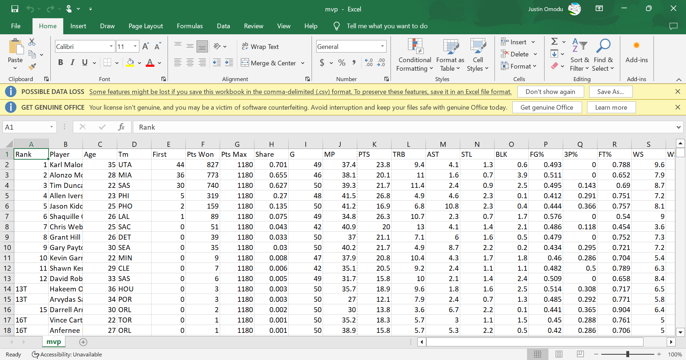
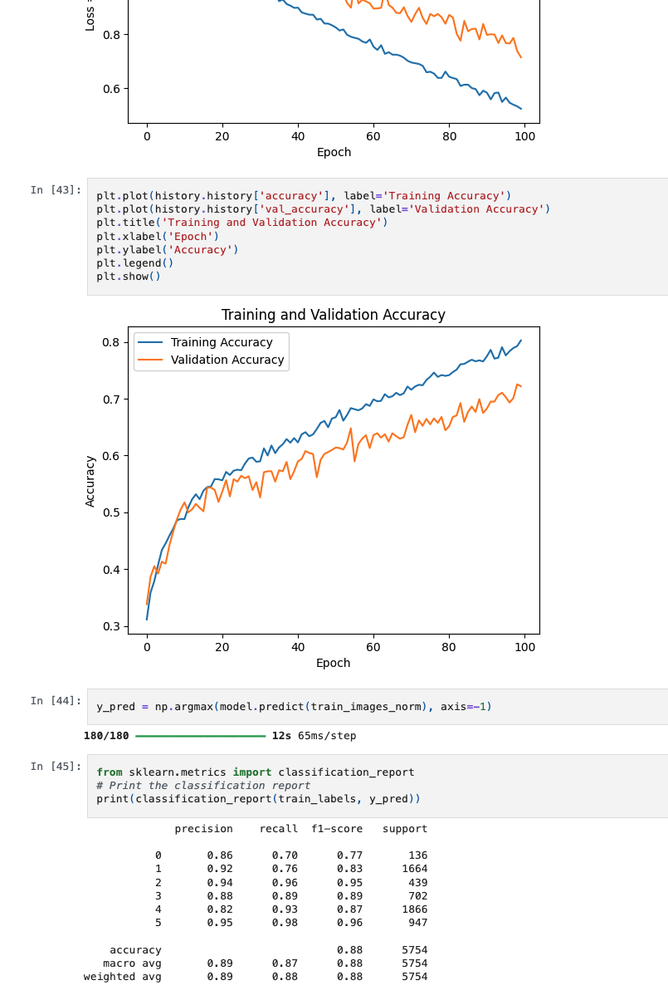
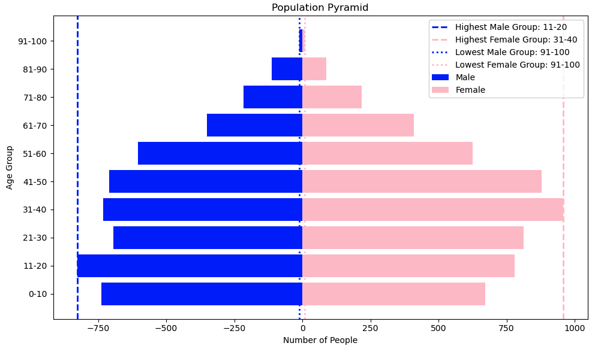
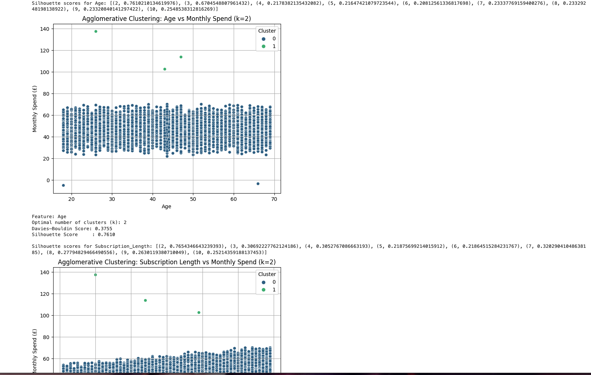
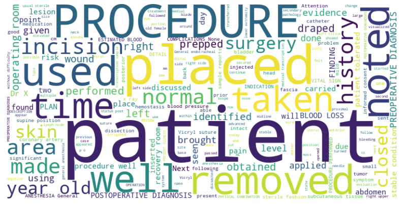
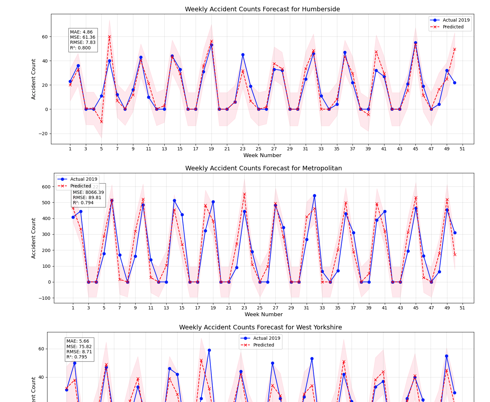
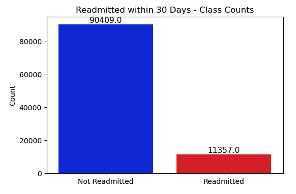
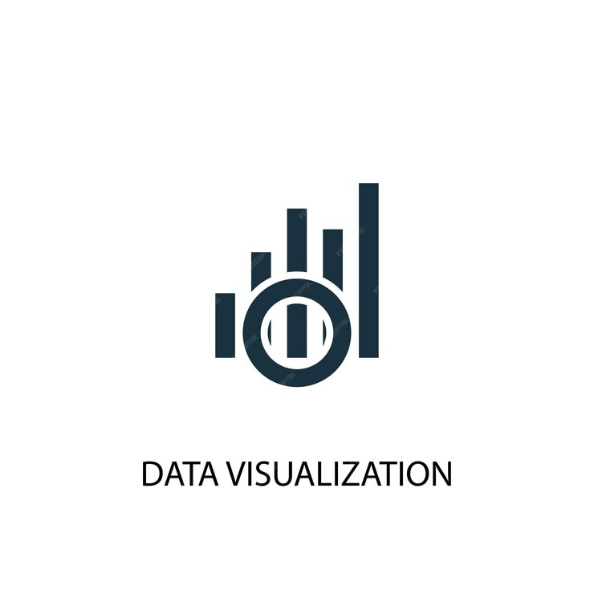
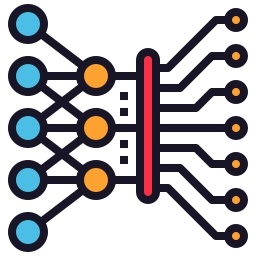
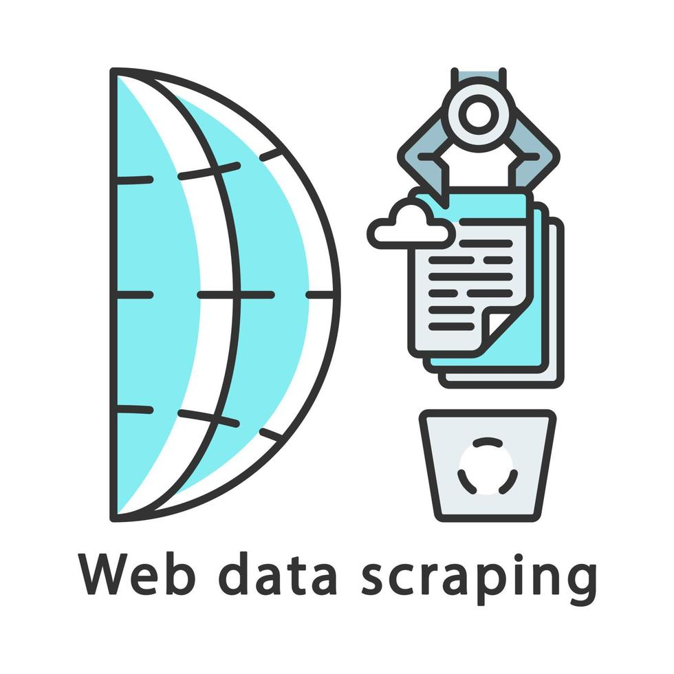

.png)
Analysis of Universities Quota
Exploratory analysis and visual insights around university quota allocation and patterns.
I build end-to-end analytics and machine learning solutions from data cleaning and SQL to modelling, visualization, and storytelling.
I’m a data scientist focused on building practical solutions that turn raw data into insights and action. I enjoy delivering clean pipelines, strong evaluation, and visuals that communicate clearly.
8 projects — swipe or use arrows to browse.
Exploratory analysis and visual insights around university quota allocation and patterns.

Multi-page scraping pipeline that collects, cleans, and exports structured datasets.

Computer vision model for classifying vehicle damage to support insurance claim verification.

Demographic and occupational analysis to support local planning and investment decisions.

Supervised + unsupervised learning for customer insights, segmentation, and prediction.

NLP pipeline for multi-class text classification with feature extraction and evaluation.

Accident analytics to identify patterns, risk factors, and actionable safety insights.

Patient risk identification pipeline for 30-day readmission prediction, optimised for high recall.
Tools I use regularly.
Pandas, NumPy, scikit-learn, matplotlib — pipelines, modelling, evaluation, and automation.

Joins, aggregations, window functions, and data modelling for structured reporting and insights.

Clear plots and dashboards for trends, distributions, comparisons, and stakeholder-ready storytelling.

Classification, regression, clustering, model selection, and metric-driven evaluation.

CNNs for computer vision using TensorFlow/Keras — training, tuning, and performance assessment.
Text preprocessing, TF‑IDF, multi-class classification, and evaluation for real-world text data.

Automated data collection and parsing for multi-page sources, with clean exports and reproducibility.
ETL-style workflows: cleaning, transforming, validating, and structuring data for analysis.

Version control, clean commits, project documentation, and sharing work publicly.
Want to work together or see more projects? Message me.